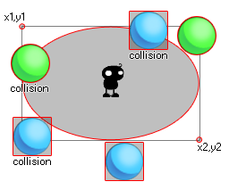

collision_ellipse( x1, y1, x2, y2, obj, prec, notme );
| Argumento | Descripción |
|---|---|
| x1 | La coordenada x del lado izquierdo de la elipse para verificar. |
| y1 | La coordenada y del lado superior de la elipse para verificar. |
| x2 | La coordenada x del lado derecho de la elipse para verificar. |
| y2 | La coordenada y del lado inferior de la elipse para verificar. |
| obj | El objeto para verificar, por ejemplo, las colisiones. |
| prec | Si la verificación se basa en colisiones de píxeles perfectos (verdadero = lento) o su cuadro delimitador en general (falso = rápido). |
| notme | Si la instancia de llamada, si corresponde, debe excluirse (verdadero) o no (falso). |
Devoluciones: id de instancia o noone
Collision_ellipse usa los primeros cuatro argumentos (x1, y1, x2, y2) para definir el ancho y alto de una elipse dentro de la habitación actual y luego verifica si algún objeto que está definido por el argumento "obj" está en colisión con ese zona. Esta colisión puede verificarse como precisa o no, y también puede optar por verificar si la instancia ejecuta el código o no. Considera esta imagen:

Aquí, la instancia en el medio está usando una elipse de colisión para verificar objetos de bola. Ahora, los azules no tienen un cuadro delimitador preciso y, como puede ver, incluso si el sprite no está tocando la elipse, la colisión aún puede ocurrir (incluso si establece la opción precisa en la función en verdadero) como el El cuadro delimitador de ese objeto sobrepasa el área elíptica definida por collision_circle. Por otro lado, las bolas verdes solo se considerarán en colisión si el sprite real sobrepasa la elipse definida. Recuerde, para que se consideren las colisiones precisas, tanto el objeto sprite como la función de colisión deben marcarse con precisión como on. También se debe tener en cuenta que el valor de retorno de la función puede ser el ID de cualquiera de las instancias que se considera que están en colisión.
if collision_ellipse(50, 50, 200, 100, obj_Player,
false, true)
{
instance_create_layer(obj_Player.x, obj_Player.y,
"Effects", obj_Splash);
}
Esto controlará una zona elíptica dentro de los límites de 50x, 50y y 200x, 100y para el objeto "obj_Player". Si hay una colisión con ese objeto, creará una instancia de "obj_Splash" en las coordenadas x / y de obj_Player.